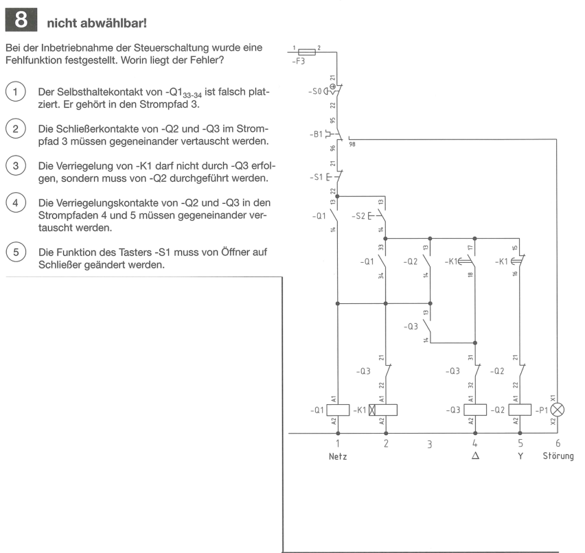
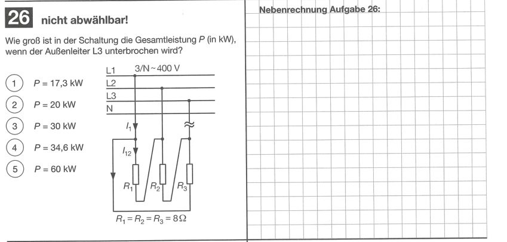
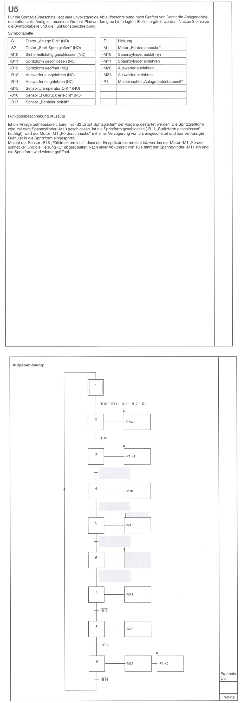

The right circuit belongs to Q8, extending alongside Q9; the Q9 panel is masked out while preserving page geometry.

The right grid explicitly says Nebenrechnung Aufgabe26.

The statement requests completion of the Grafcet. Page20 prints Ergebnis U5 next to its scoring field. This explicit label, matching symbols and the requested response establish ownership.

